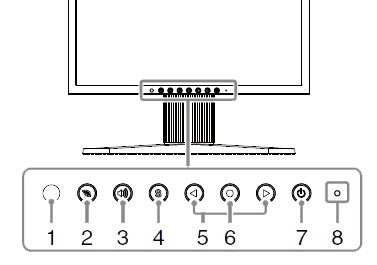

| NOTE: | Screen Manager detail can be found here EIZO S1921-X - Screen Manager Controls |
Illustration 7: EIZO S1921-X LCD Monitor Control Buttons

| Description | Function | |
| 1 | Sensor | The sensor detects ambient brightness. Auto EcoView function. |
| 2 | EcoView | Displays the setting menu of Auto EcoView and EcoView Index. |
| 3 | Volume Control | Displays the volume adjustment menu. |
| 4 | Input Signal Selection | Switches input signals for display. |
| 5 | Control (Left, Right) | • Displays the brightness adjustment window (page 8). • Chooses an adjustment item or increases/decreases adjusted values for advanced adjustments using the Adjustment menu. |
| 6 | Enter | Displays the Adjustment menu, determines an item on the menu screen, and saves values adjusted. |
| 7 | Power | Turns the power on or off. |
| 8 | Power indicator | Indicates monitor’s operation status. Blue: Operating Orange: Power saving Off: Power off. |